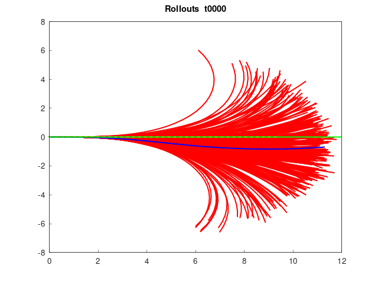

I was a member of MIT-PITT-RW, "a joint team
between University of Pittsburgh, Rochester Institute of Technology (RIT), University
of Waterloo, and Massachusetts Institute of Technology (MIT) Driverless team. Its
mission is to be the center for applying autonomous vehicle technology across each of
our partner schools and to create and implement cutting edge technology in the AV field."
During my short involvement, I worked on model predictive path integral
(MPPI) method (beneficial from GPU
computing), where I verified its functionalities (optimal trajectory planning, obstacle
avoidance, etc) and directly discussed further improvements with the team's chief
engineer. In the near future, I want to benchmark MPPI vs MPC and investigate a more
sample-efficient technique.
Unfortunately, I am taking a break from the team.

Overtaking demo with MPPI: reference (green), seed (yellow), rollouts (red), optimal plan (blue). The car swerves to the right to pass the leading opponent. (Refresh tab to see the gif again)